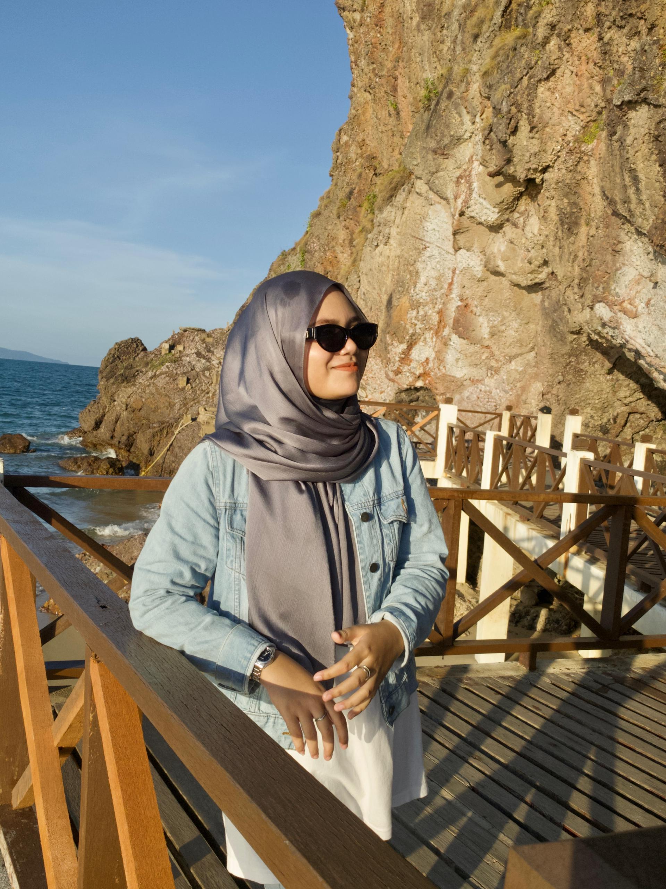
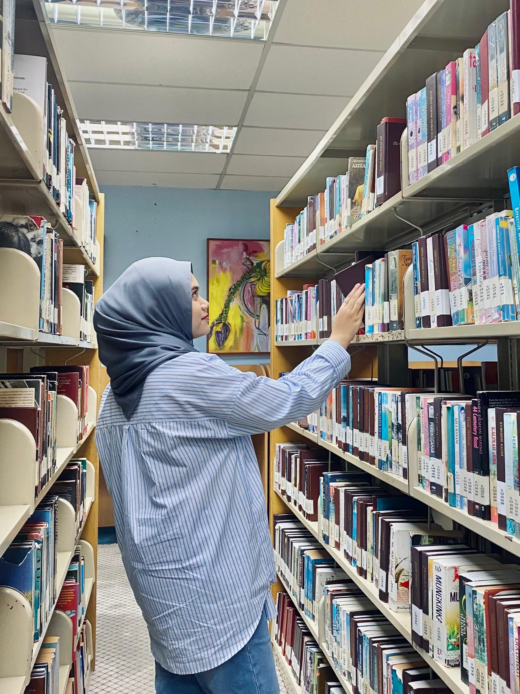

Hello! I'm Saffiya
I’m a Diploma student in Information Management with a strong desire to learn and progress. I'm a curious, hardworking, and driven individual who enjoys solving problems, the vibes and finding better ways to complete tasks. I’m also a good listener, enjoy working with others, and believe every experience is an opportunity to grow. Whether I'm studying, helping others, or working on a project, I always give my best effort. I have completed an internship at a law office where I assisted with legal paperwork, filing systems, and administrative tasks. That experience helped me understand the importance of information management in real workplaces and boosted my confidence. I'm now looking forward to gaining more experience, building confidence, and taking on new challenges that help me grow professionally and personally. Outside of academics,I enjoy exploring nature, and taking photos. I also love learning fun facts.

Hobbies
In my spare time, I enjoy doing creative and calming things that allow me to unwind and be inspired. I enjoy badminton and window shopping, particularly the mystery and personal growth genres, because they help me to gain new viewpoints and stimulate my imagination. I really adore photography,capturing candid moments and natural surroundings is quite relaxing for me. When I'm not reading or shooting pictures, I enjoy journaling, listening to music, and hanging out with friends. I believe that having interests not only gives balance to my life, but also keeps me curious, positive, and driven in all I do.

Diaries
One of my main goals is to become a lecturer, someone who not only educates but also inspires. But I understand that being a lecturer is not an easy path. It requires years of planning, effort, and ongoing development. It entails embracing obstacles, accepting failure as a necessary part of the process, and remaining dedicated even when the road seems long. To get there, I know I'll need to do a lot more studying, gain experience, and push myself outside my comfort zone. But the prospect of one day teaching at a university, striding into a lecture hall with confidence and passion, truly inspires me. Beyond my profession, I want to explore the world, learn from people, and accumulate experiences that will show who I am. My life was filled with lessons, memories, and small events that made it lovely. For the time being, I'll take things slowly, keep learning, and believe that all of my tiny efforts today will bring me somewhere fantastic. That's all.